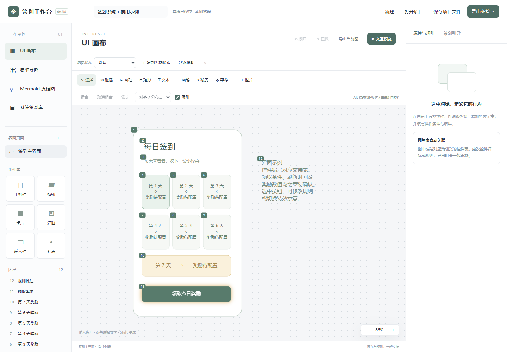

界面与状态
画布支持多页、图片、文字、基础控件与图层。页面可以复制为独立状态，分别编辑显示、禁用与状态说明。
把界面、页面状态、交互预览和系统说明放进同一个策划工作台。
写系统需求时，界面示意、流程图和文字规则容易分散。这个原型将它们放在同一项目中，让我能同时说明控件在哪里、处于什么状态、点击后去哪里。
画布支持多页、图片、文字、基础控件与图层。页面可以复制为独立状态，分别编辑显示、禁用与状态说明。
支持页面跳转、浮层、关闭、返回和状态切换，用可点击示例说明界面流转。
提供脑图与 Mermaid 流程、状态、时序图；系统说明使用引导章节，帮助整理控件规则与状态。
项目可保存为包含图片的 .sysplan 文件；支持 HTML、Markdown、SVG 导出。浏览器打印可生成 PDF。

桌面端打开工作台后，可使用“打开交互使用示例”，再进入“交互预览”。推荐至少 1100 像素宽的窗口；手机端可阅读本页并下载材料。
当前界面为中文，没有集成 AI 对话或自动规则生成。页面状态是独立快照；交互预览不执行真实后端数据、条件表达式或连续动作。
工具使用 Mermaid 进行离线图表渲染，下载包保留对应许可证。